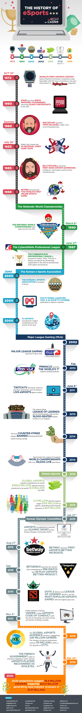

Mi az eSport?
A versenyszerű videojátékozást – competitive gaming – nevezhetjük esportnak, amit általában számítógépen vagy konzolon játszanak, akár csapatban, akár egyedileg, de a lényege, hogy egymás ellen mutassák meg erejüket és tudásukat a résztvevők. A legnépszerűbb esport játékok közé a Dota 2, a Counter Strike és a League of Legends tartozik.
Az eSport fejlődése
2016ban a versenyek után járó össznyeremény 97,6 Millió $ volt. Ez a szám 2017ben 114,8 Millió $-ra nőtt. 2018ban már meghaladta a 157 Milló $-t. Az aktiv játékosok száma is jelentősen megnőtt 2016hoz képest amikor 15685 aktiv eSportoló volt, 2018ban már 19584 volt ez a szám. A versenyek száma azonban csökkenni kezdett az évek során, inkább "kevesebb" verseny van de azoknak a nyeremény alapja jelentősen megnőtt.
